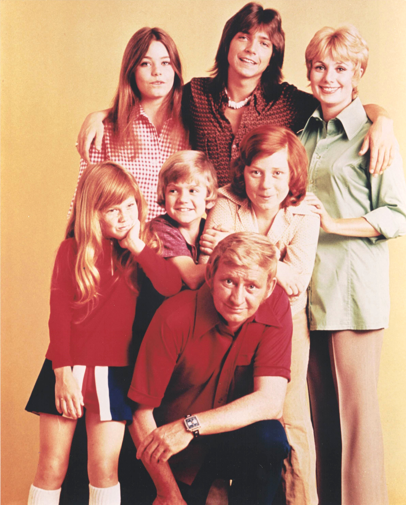

Product No. HEC-0089
$18.99
Shipping: $8.95
Description
8x10 color photograph
Full Description
"The Partridge Family" is an American musical sitcom that originally aired from 1970 to 1974. The series starred Shirley Jones as Shirley Partridge, a widowed mother who forms a pop group with her five children and travels with them performing concerts. David Cassidy played Keith Partridge, the group's teenage lead singer and guitarist, while Susan Dey portrayed Laurie Partridge. The younger children were Danny, Chris, and Tracy Partridge, played by Danny Bonaduce, Jeremy Gelbwaks and later Brian Forster, and Suzanne Crough. Dave Madden co-starred as the family's frequently exasperated manager, Reuben Kincaid. The show followed the family's adventures both at home and on the road, combining sitcom storylines with musical performances. The fictional group became a real recording success, with David Cassidy and Shirley Jones contributing vocals to records released under the Partridge Family name. Their biggest hit was "I Think I Love You," which reached No. 1 on the Billboard Hot 100 in 1970. Other popular songs included "I'll Meet You Halfway," "Doesn't Somebody Want to Be Wanted," and "I Woke Up in Love This Morning." "The Partridge Family" became a major part of early-1970s pop culture and helped make David Cassidy one of the era's biggest teen idols. The show's music, colorful touring bus, cast photographs, records, and autographs remain especially popular with collectors of classic television, 1970s music, and vintage celebrity memorabilia.
Condition
Excellent condition